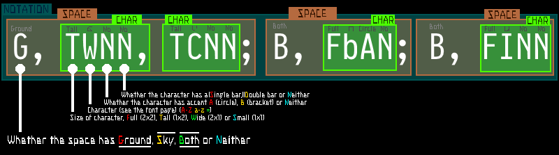

This script allows users to insert full Synapsian into their webpages by using a simple notation script for Synapsian.
For example: G,SbAN,SnNN,ScNN,SZNN;G,TWNN,TCNN becomes .
The notation is as follows:

The example would show as: .
This JavaScript script turns all Synapscript on the page set to be Synapsified into Synapsian (great sentence Tsuki). You may test it below by typing Synapscript into the text box then pressing the yellow button, in which the output will appear:
This script requires jQuery.
Setup
Extract the zip to some directory in your webserver, then add the following HTML to your webpage's HEAD, assuming you have already added jQuery: